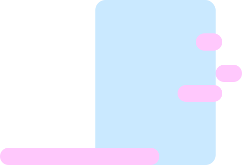
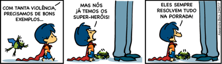
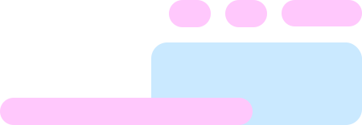
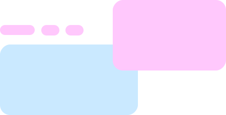
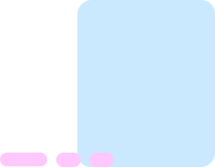

Módulo: Adolescências e Juventudes: Dores e Sofrimentos Específicos
Sobre as autoras
Paulo Vitor Palma Navasconi
Psicólogo, professor e membro do coletivo Yalodê-Badá e do Núcleo de Estudos Interdisciplinar Afro-Brasileiro da UEM (NEIAB). Graduado pela Universidade Estadual de Maringá (UEM). Especialista em Psicologia Social. Mestre e Doutor em Subjetividade e Práticas Sociais na Contemporaneidade pela Universidade Estadual de Maringá. Autor do livro Vida, Adoecimento e Suicídio: racismo na produção do conhecimento sobre jovens negros LGBTTIs, publicado no ano de 2019.
Vládia Jamile dos Santos Jucá
Psicóloga pela Universidade Federal do Ceará (UFC), com mestrado em Comunicação e Cultura e doutorado em Saúde Pública, ambos pela Universidade Federal da Bahia (UFBA). Realizou estágio pós-doutoral em teoria psicanalítica pela Universidade Federal de Minas Gerais (UFMG). Professora dos cursos de graduação de pós-graduação do Departamento de Psicologia da UFC, em que integra o grupo de Pesquisas e Intervenções sobre Violências e Produção das Subjetividades (VIESES). Desenvolve pesquisas e práticas de extensão voltadas para adolescentes em contextos de vulnerabilidade, por meio do diálogo entre a teoria psicanalítica e a saúde mental coletiva.
Estela Ramires Lourenço
Psicóloga e consultora em Saúde Mental na Escola. Doutoranda do PPG Educação e Saúde na Infância e Adolescência pela UNIFESP. Mestra em Ensino em Ciências da Saúde pela UNIFESP. Especialista em Autolesão, Prevenção e Posvenção do Suicídio pelo Instituto Vita Alere-SP. Especialista em Gestão em Saúde pela UFSJ. Especialista em Gestão de Pessoas e Projetos Sociais pela UNIFEI. Membro da Associação Brasileira de Estudos e Prevenção de Suicídio (ABEPS).
Coordenação acadêmica – Luana Lima
Psicóloga e Bacharel Interdisciplinar em Humanidades (UFBA). Doutoranda e Mestra em Bioética (UnB). Membra-fundadora da Associação Brasileira de Estudo e Prevenção do Suicídio (ABEPS). Pesquisadora do Observatório de Direitos Humanos dos Pacientes (ODHP). Autora do livro Deverei velar pelo Outro? Suicídio, estigma e economia dos cuidados.
Coordenação Pedagógica – Maisse Fernandes de Oliveira Rotta
Médica pediatra. Mestra em Saúde da Família e Comunidade pela Fiocruz. Doutoranda em Saúde e Desenvolvimento na Região Centro-Oeste pela UFMS. Pós-graduada em psiquiatria infantil. Professora do curso de medicina da Universidade Anhanguera (UNIDERP) e da Universidade Estadual do Mato Grosso do Sul.Suicídio, estigma e economia dos cuidados.
Sobre o Módulo
Módulo: Adolescências e Juventudes: Dores e Sofrimentos Específicos
Carga horaria: 40 horas
OBJETIVOS DE APRENDIZAGEM
Apresentar os principais sofrimentos e transtornos mentais na adolescência, a violência e adições, como um problema de saúde pública, considerando a violência estrutural, as desigualdades sociais e o risco de suicídio, visando à promoção da saúde e à garantia de direitos.
Apresentação do módulo
“Ponho linhas no mundo, mas já quis pôr no pulso,
Sem o torro, nossa vida não vale a de um cachorro triste.
Hoje cedo não era um hit, era um pedido de socorro.
[...] A última tendência é depressão com aparência de férias.
[...] Tenho sangrado demais,
Tenho chorado pra cachorro.
Ano passado eu morri,
Mas esse ano eu não morro.
[...] Permita que eu fale e não as minhas cicatrizes.
Tanta dor rouba a nossa voz, sabe o que resta de nós?”
(EMICIDA)
Seja bem-vindo ao módulo Adolescência e Juventudes: Dores e Sofrimentos Específicos. Pretendemos, nesta nossa breve jornada de aprendizagem, conversar sobre as experiências de sofrimento mais recorrentes na adolescência, com destaque para violência, transtornos mentais, comportamento suicida e luto, que são vivências que provocam grandes impactos na saúde mental e nas dinâmicas relacionais.
A adolescência é uma experiência plural, portanto, falamos de adolescências. Um dos aspectos fundamentais sobre os quais precisamos refletir é a violência durante esse período da vida. A primeira parte do módulo foi dedicada, dessa forma, à elaboração do conceito de violência, aos tipos e aos efeitos diversos que estas podem causar. Abordamos, em seguida, a adolescência e as substâncias psicoativas, especialmente com base nas perspectivas ampliadas da tríade sujeito-droga-contexto e na redução de danos. O bloco seguinte tratou de experiências de sofrimento e transtornos mentais. Para além de uma descrição desses estados de fragilidade e/ou adoecimento, refletimos acerca da tendência à patologização das experiências vitais, especialmente as desviantes, indesejadas e improdutivas, que tendem a centralizar os problemas no indivíduo, desatrelando os processos de subjetivação das relações sociais e afetivas.
Analisamos também o fenômeno da autolesão, suas expressões, modos de enfrentamento, etc. Em diálogo temático, aprofundamos o tema do comportamento suicida: apresentamos dados estatísticos acerca do fenômeno e fazemos uma análise dos condicionantes sociais da saúde, dos fatores de risco, de proteção e mitos envolvidos. A análise do módulo se encerra com o estudo acerca do luto – desde perdas e/ou transformações corporais, que caracterizam o adolescer, às mortes que determinam os processos de enlutamento.
A nossa proposta denega uma leitura individualizante acrítica, que ,comumente, desconsidera a dimensão sociopolítica presente na produção do sofrimento. Ao contrário de uma tendência moderna e neoliberal que compreende a ansiedade, a depressão, o comportamento suicida ou qualquer comportamento indesejado como sinal de inadequação, transtorno ou fracasso individual, o passeio pelo universo psíquico da nossa juventude no presente módulo tem por finalidade potencializar as diversas vozes e experiências; estimular o debate sobre as diversas manifestações de sofrimento na atualidade; legitimar os discursos dos sujeitos sofrentes para ampliar e intensificar os modos de cuidado, as ações e políticas de promoção à saúde mental e prevenção do suicídio. Vamos juntos?
Adolescência(s) e violência(s)
Adolescência(s) e violência(s)
Afinal, o que é adolescência? Quando começa e quando termina? Como acontecem a adolescência e a juventude? Essas são questões que passaram a ser fundamentais nos estudos do desenvolvimento humano e, principalmente, nas áreas das ciências humanas e da saúde. No entanto, a cada tentativa de responder a essas questões, tendemos a naturalizar o processo de desenvolvimento da pessoa, sobretudo, o período da adolescência. Você deve estar se perguntando: o que significa dizer isso?
Pois bem, naturalizar significa compreender que o desenvolvimento humano é um produto natural e, desse modo, que as práticas educativas e sociais pouco interferem no processo de desenvolvimento. Olhar a adolescência por esse viés nos faz universalizar um fenômeno complexo e plural, com tendências e variações de acordo com a época histórica, povos e culturas. Por exemplo: imagine como foi a sua adolescência. Imaginou? Agora imagine a adolescência de Júlia ou Alex. Elas podem ser consideradas iguais, semelhantes ou diferentes?
Convidamos você a pensar a adolescência não como um fenômeno universal, ou seja, comum a todas e todos, entendemos que não existe uma adolescência, mas várias formas de experienciar o que estamos chamando de adolescências. Por exemplo, basta pensarmos em nossas brincadeiras, vestimentas e hábitos que vamos perceber que nossos comportamentos, ações e hábitos mudam, conforme transformações sócio-históricas vão acontecendo.
ANIMAÇÃO TÓPICO

No país há graves problemas educacionais, de moradia, de oportunidades de trabalho e lazer, e, consequentemente, grandes desigualdades nas formas de viver, de adoecer e de morrer.
Esses problemas provocam profundas desigualdades socioeconômicas e sociais, que também afetam adolescentes e jovens. Essas desigualdades fazem com que muitos adolescentes tenham dificuldades em obter reconhecimento e acesso a seus direitos elementares, como educação, mobilidade, nutrição, habitação, boa saúde física e mental, trabalho, lazer, entre outros (MINAYO; SOUZA, 1999).
Refletindo sobre o fenômeno da violência
A violência está presente nas relações e experiências humanas desde os primórdios da humanidade e atinge todos os setores da sociedade, apresentando-se como um fenômeno multideterminado e complexo.
A violência “não se limita ao uso da força física, mas à possibilidade ou ameaça de usá-la” (VELHO, 2000, p. 11). Com isso, é possível associar a violência a uma ideia de poder efetivado pela dinâmica das relações sociais marcada pela hierarquia e dominação.
“Encerrar a noção de violência numa definição fixa e simples é expor-se a reduzi-la, a compreender mal sua evolução e sua especificidade histórica” (MINAYO, 2006, p. 14).
A seguir, duas lições importantes sobre a violência:
Lição 01
Apesar de já percebermos algumas pequenas mudanças na sociedade, em geral, na TV e nas redes sociais, as mulheres são magras e têm cabelos lisos e os homens são altos e atléticos.
Lição 02
A violência se torna um tema do campo da saúde pelo impacto que provoca na qualidade de vida; pelas lesões físicas, psíquicas e morais que acarreta e pelas exigências de atenção e cuidados dos serviços médico-hospitalares (MINAYO, 2004).
No ano de 2002, a Organização Mundial da Saúde publicou extenso informe denominado Relatório Mundial sobre Violência e Saúde (KRUG et al., 2002, p.5), trazendo a seguinte definição de violência: “uso intencional da força física ou do poder, real ou em ameaça, contra si próprio, contra outra pessoa, ou contra um grupo ou uma comunidade, que resulte ou tenha grande possibilidade de resultar em lesão, morte, dano psicológico, deficiência de desenvolvimento ou privação”.
Quanto à tipologia, a violência divide-se em: a) autoinfligida, que é a violência dirigida contra si mesmo; b) interpessoal, infligida entre duas pessoas, a qual se subdivide em familiar e comunitária, ou seja, considera-se violência doméstica/intrafamiliar a que ocorre entre os parceiros íntimos e entre os membros da família, principalmente no ambiente da casa, mas não unicamente. É toda ação ou omissão que prejudique o bem-estar, a integridade física, psicológica ou a liberdade e o direito ao pleno desenvolvimento de outra pessoa da família. Pode ser cometida dentro ou fora de casa por algum membro da família, incluindo pessoas que passam a assumir função parental, ainda que sem laços de consanguinidade, e que tenha relação de poder. A violência doméstica/intrafamiliar não se refere apenas ao espaço físico onde a violência ocorre, mas, também, às relações em que se constrói e efetua. Este tipo de violência também inclui outros membros do grupo, sem função parental, que convivam no espaço doméstico. A violência comunitária é definida como aquela que ocorre no ambiente social em geral, entre conhecidos ou desconhecido. É praticada por meio de agressão às pessoas, por atentado à sua integridade e vida e/ou a seus bens e constitui objeto de prevenção e repressão por parte das forças de segurança pública e sistema de justiça (polícias, Ministério Público e poder Judiciário). Por fim, a violência c) coletiva, cometida pelos grandes grupos ou Estado, podendo ser social, política ou econômica. Quanto à natureza dos atos violentos, eles podem ser de caráter: físico, sexual e psicológico (KRUG et al., 2002).
Conhecendo os tipos de violência
Quais tipos de violência você conhece? Krug et al. (2002) nos apresentam alguns tipos, com suas respectivas definições. Veja mais clicando nos flash cards a seguir:
Tortura
atos intencionalmente praticados para causar lesões físicas ou mentais, ou de ambas as naturezas, com a finalidade de obter vantagem, informação, aplicar castigo, entre outros.
Violência psicológica
ação ou omissão destinada a degradar ou a controlar ações, comportamentos, crenças e decisões de outra pessoa por meio de intimidação, manipulação, ameaça direta ou indireta, humilhação, isolamento ou qualquer outra conduta que implique prejuízo, à saúde psicológica, à autodeterminação ou ao desenvolvimento pessoal.
Discriminação
ato de distinção, segregação, prejuízo danos ou tratamento diferenciado de alguém, por causa de características pessoais, raça/etnia, gênero, religião, idade, origem social, entre outras.
Conhecendo os tipos de violência
Quais tipos de violência você conhece? Krug et al. (2002) nos apresenta alguns tipos, com suas respectivas definições. Veja mais clicando nos flash cards a seguir:
Violência sexual
Quais tipos de violência você conhece? Krug et al. (2002) nos apresenta alguns tipos, com suas respectivas definições. Veja mais clicando nos flash cards a seguir:
Abuso sexual sem contato físico
assédio sexual; abuso sexual verbal; telefonemas obscenos; exibicionismo; voyeurismo; e pornografia.
Abuso sexual com contato físico
atos físico-genitais praticados a outrem, que incluem carícias nos órgãos genitais, tentativas de relações sexuais, masturbação, sexo oral, penetração vaginal e anal.
Conhecendo os tipos de violência
Quais tipos de violência você conhece? Krug et al. (2002) nos apresenta alguns tipos, com suas respectivas definições. Veja mais clicando nos flash cards a seguir:
Violência física
ato de agressão física que provoca marcas visíveis ou não. Pode ser praticada com uso de força física do agressor, no qual machuca a vítima de várias maneiras, inclusive com o uso de armas. Exemplos: bater, chutar, queimar, cortar e mutilar.
Negligência e abandono
abandono, descuido, desamparo, desresponsabilização e descompromisso do cuidado. Esse ato não está necessariamente relacionado a dificuldades socioeconômicas.
Bullying
também chamado de intimidação sistemática, conforme definido pela Lei nº 13.185/2015, pode ser compreendido como sendo, “todo ato de violência física ou psicológica, intencional e repetitivo que ocorre sem motivação evidente, praticado por indivíduo ou grupo, contra uma ou mais pessoas, com o objetivo de intimidá-la ou agredi-la, causando dor e angústia à vítima, em uma relação de desequilíbrio de poder entre as partes envolvidas (BRASIL, 2015).
Conhecendo os tipos de violência
Quais tipos de violência você conhece? Krug et al. (2002) nos apresenta alguns tipos, com suas respectivas definições. Veja mais clicando nos flash cards a seguir:
Trabalho infantil
é a exploração da força de trabalho de pessoas que tenham idade inferior à mínima permitida para trabalhar. No Brasil, o trabalho não é permitido, sob qualquer condição, para crianças e adolescentes com menos de 14 anos. Adolescentes entre 14 e 16 podem trabalhar, mas na condição de aprendizes. Quando a pessoa tem entre 16 e 18 anos, as atividades laborais são permitidas, desde que não aconteçam das 22h às 5h e não sejam insalubres ou perigosas.
Tráfico de crianças e adolescentes
recrutamento, transporte, transferência, alojamento ou acolhimento de uma criança ou adolescente para fins de exploração.
Violência institucional
tipo de violência motivada por desigualdades (de gênero, étnico-raciais, econômicas, etc.). Essas desigualdades se formalizam e institucionalizam nas organizações privadas e nos aparelhos estatais, assim como nos diferentes grupos que constituem essas sociedades.
Conhecendo os tipos de violência
Quais tipos de violência você conhece? Krug et al. (2002) nos apresenta alguns tipos, com suas respectivas definições. Veja mais clicando nos flash cards a seguir:
Violência intrafamiliar
é qualquer tipo de violência praticada dentro de casa ou unidade doméstica, sendo, geralmente, praticada por um membro da família que vive com a vítima. As agressões domésticas incluem: abuso físico, sexual e psicológico, negligência e abandono.
Violência moral
ação destinada a caluniar, difamar ou injuriar a honra ou a reputação da pessoa.
Violência patrimonial
ato de violência que implique dano, perda, subtração, destruição ou retenção de objetos, documentos pessoais, bens e valores.
Figura 1 - Violência
Fatores de risco ou de maior vulnerabilidade para crianças, adolescentes e jovens
- Violência por parte dos pais e de outros responsáveis;
- Abuso sexual, negligência educacional e nutricional, prostituição forçada;
- Ambientes familiares instáveis;
- Reprodução e naturalização da violência, ou seja, em muitos casos, a violência se torna a forma escolhida para a resolução de conflitos;
- Pobreza, elevados níveis de desemprego e rotatividade populacional. A pobreza afeta a população infantojuvenil por impactar o comportamento parental e provocar a deterioração de infraestruturas físicas e sociais da comunidade;
- Abuso de substâncias, o estresse e o isolamento social (KRUG et al., 2002).
Feedback positivo: Os profissionais que trabalham com crianças e adolescentes em situação de vulnerabilidade ou de maior risco de violência precisam estar atentos para identificar quais fatores de risco estão associados ao contexto específico. Reconhecer os fatores de risco é uma forma de ampliar os modos de intervenção e cuidado.
Feedback orientador: Para prevenir a violência contra crianças e adolescentes é preciso saber identificá-la e notificá-la, assim como buscar formas eticamente comprometidas de atuação.
Em toda situação de violência, deve haver uma intervenção de qualquer pessoa que conheça o fato. O artigo 13 do ECA (BRASIL, 2017a) prevê que “os casos de suspeita ou confirmação de maus-tratos contra criança ou adolescente serão obrigatoriamente comunicados ao Conselho Tutelar da respectiva localidade, sem prejuízo de outras providências legais”.
Nesse momento, gostaríamos de saber: quais são as ações de prevenção à violência contra adolescentes que são desenvolvidas no serviço em que você se encontra inserido?
Humanizar e cuidar para prevenir
Humanizar o cuidado é se posicionar a favor da vida com dignidade, respeitando as diferenças e as particularidades, como gênero, etnia, raça, orientação sexual, entre outras características, assim como as populações específicas (indígenas, quilombolas, ribeirinhos, assentados, etc.). A prevenção à violência não se dá somente por meio de uma única ação ou iniciativa, mas pela combinação de diversas estratégias que visem à garantia de direitos fundamentais. Nesse sentido, é possível afirmar que a assistência à vítima de violência, aqui, em especial, ao adolescente que está inserido em um contexto de violência, requer empatia, habilidade, sensibilidade e compromisso com essa questão. Por isso, os profissionais devem sempre atuar de forma articulada, desenvolvendo um trabalho interdisciplinar e interprofissional, visando sempre à promoção, à proteção e à garantia de direitos.
ADICIONAR CARROUSEL
Os casos de violência contra criança e adolescente devem ser denunciados ao Conselho Tutelar, Ministério Público ou aos disque-denúncias 24h, como o Disque 100. O disque 100 é um canal de comunicação da sociedade civil com o poder público, que possibilita conhecer e avaliar a dimensão da violência contra os direitos humanos e o sistema de proteção, bem como orientar a elaboração de políticas públicas.
Em suma, abordamos neste primeiro momento, o conceito de violência, sua tipologia, as vulnerabilidades específicas quando se trata das violências praticadas contra os adolescentes, bem como algumas recomendações de como proceder no atendimento às vítimas. A violência hoje atravessa transversalmente adolescentes de várias etnias, classes sociais e gêneros, mas de modo desigual, como tratamos anteriormente. A partir da próxima seção, trataremos de questões concernentes aos modos de expressão do sofrimento psíquico, iniciando com as adições na adolescência.

Adolescências e o uso de substâncias psicoativas
Adolescência e o uso de substâncias psicoativas
O uso de substâncias psicoativas por adolescentes preocupa tanto profissionais da rede de assistência e de proteção a crianças e adolescentes quanto pais e professores. Para entendermos melhor essa questão, é importante falarmos sobre os vários usos que os adolescentes fazem das substâncias. Por exemplo, se é um uso para socializar com seus pares ou um uso para relaxar diante de situações adversas com as quais não está conseguindo lidar. Outro ponto é sabermos quais são as substâncias mais utilizadas e entendermos quando o uso precisa ser objeto de uma atenção especializada no campo da saúde. Nesta direção, ao tratarmos das questões que envolvem adolescência e substâncias psicoativas, é importante diferenciarmos uso, abuso e adição. Considerando a possibilidade de o uso se tornar abusivo, vamos conhecer, também, os fatores de risco que aumentam a probabilidade de o uso tornar-se problemático, bem como os fatores de proteção que atuam na direção contrária.
O uso de substâncias deve ser pensado a partir de um tripé formado pela pessoa usuária e sua história, a substância consumida e o contexto no qual acontece o uso
“[...] cada humano consumirá essa ou aquela droga em função de suas necessidades subjetivas e sociais. Não são as drogas que fazem os humanos [...] são os homens que fazem as drogas” (NERY FILHO, 2012, p. 20).
É importante esclarecer que preferimos usar substâncias psicoativas a drogas porque, quando escutamos o segundo termo, geralmente pensamos em algo que necessariamente é ilegal e prejudicial à saúde. O termo substâncias psicoativas, por sua vez, ajuda-nos a evitar um julgamento moral prévio e evidencia o fato de que um conjunto de substâncias atua em nosso cérebro, alterando seu funcionamento. Nesse sentido, o café, muito ingerido em nossa cultura, é uma substância psicoativa que, tomada em demasia, pode gerar dependência. No entanto, em doses pequenas, é um estimulante, sem maiores prejuízos à saúde. Vejamos o exemplo das medicações prescritas por psiquiatras, como ansiolíticos e antidepressivos.
Essas medicações são lícitas, atuam sobre o cérebro e são comercializadas de forma controlada. Devem ser utilizadas com finalidade terapêutica. No entanto, identificamos, inclusive entre adolescentes, uso indevido dessas medicações que, por vezes, são prescritas para familiares ou obtidas no mercado informal.
Em linhas gerais, as substância psicoativas são classificadas em:
bebidas alcoólicas, solventes ou inalantes, tranquilizantes ou ansiolíticos, calmantes e sedativos, ópio e morfina
cafeína, anfetaminas, cocaína e tabaco
bebidas alcoólicas, solventes ou inalantes, tranquilizantes ou ansiolíticos, calmantes e sedativos, ópio e morfina
O nível socioeconômico, os territórios onde circulam e as cenas de uso são muito importantes para definir quais substâncias estarão disponíveis para as (os) adolescentes. Por exemplo, em festas eletrônicas, é comum o uso das drogas sintéticas que alteram o estado de consciência e permitem experiências psicodélicas (RAUPP; PEREIRA, 2022). Com recorrência, o uso dessas substâncias nesses contextos tem um caráter experimental, e as práticas de redução de danos são fundamentais para proteger os adolescentes
A redução de danos é um modo de cuidar, efetivado por meio de um conjunto de práticas com o propósito de evitar agravos à saúde relacionados ao uso de substâncias psicoativas. A redução de danos se alinha aos princípios da integralidade e da universalidade do Sistema Único de Saúde. Todas as pessoas têm o direito de ser cuidadas, mesmo as que estão em uso abusivo ou dependência de substâncias e não conseguem interrompê-lo (SURJUS; SILVA, 2019). Falar de redução de danos, quando se trata de adolescentes, é sempre delicado, porque envolve admitir que adolescentes usam drogas. Não ofertar a redução de danos a esse público, por outro lado, é negar um dado da realidade e, em certa medida, ferir a base do Estatuto da Criança e do Adolescente, pautada pela ideia de proteção integral.
As finalidades dos usos dessas substâncias são várias. Temos usos ritualísticos (em contextos religiosos), usos recreativos, usos medicinais e, principalmente entre os adolescentes, usos para vencer a timidez, na tentativa de superar as dificuldades de socialização. Por vezes, a cocaína é utilizada com este intuito: facilitar a interação com os demais quando a inibição é um obstáculo para estar entre os pares. Encontramos, também, adolescentes que fazem uso, por exemplo, de maconha para aliviar momentos de ansiedade. Além disso, é muito comum o adolescente experimentar substâncias psicoativas para conhecer o seu efeito e para facilitar a construção de seu lugar no campo social, uma vez que esse uso geralmente é compartilhado nos grupos com os quais ele se identifica (SOUZA et al., 2015).
O fato de um adolescente fazer uso esporádico de uma substância não significa necessariamente que esteja em um padrão abusivo de uso ou em dependência química. É necessário investigar para conhecer o padrão de uso e como isso afeta sua vida. O uso pode ser ocasional e, conforme afirmamos acima, ser recreativo ou para fins de socialização. Quando se percebe esse padrão de uso, o melhor é conversar e encontrar as formas de proteção para que o uso não se torne abusivo ou provoque outros agravos à saúde. Nessa direção, a lógica da redução de danos é fundamental. A redução de danos não acontece apenas quando os problemas de saúde já estão instalados. A estratégia em questão serve para reduzir agravos.
Muitas pessoas confundem o abuso de substâncias com dependência, que pode ser psicológica e/ou química. Nos quadros de dependência, há perdas de laços sociais, e mesmo os cuidados básicos, como higiene e alimentação, podem ser interrompidos. O uso se torna compulsivo. Com frequência, nesse quadro, adolescentes se colocam em situação de risco para obter a substância, submetendo-se a diversos tipos de exploração, como sexual, ou entrando para o mundo do crime para pagar pelo que consomem. É fundamental entendermos que a dependência é uma questão de saúde e assim deve ser tratada. Não é uma falha de caráter ou qualquer outro modo de desvio moral. Os Centros de Atenção Psicossocial para a Infância e para Adolescência (CAPSi), bem como os Centros de Atenção Psicossocial, que tratam os casos de álcool e de outras drogas (CAPSad), têm equipes que podem ser acionadas para realizar o cuidado necessário. Eventualmente, a internação para desintoxicação pode ser necessária e deve acontecer no âmbito de um hospital geral, durando o tempo mínimo para que o tratamento possa seguir no contexto comunitário.
Precisamos conhecer os fatores de risco e os fatores de proteção presentes na relação dos adolescentes com as substâncias psicoativas (SCHENKER; MINAYO, 2005). Reconhecer ambos os fatores nos ajuda a trabalhar no sentido da promoção da saúde, ou seja, do cuidado ampliado que chega antes do adoecimento.
- Vulnerabilidade social e ausência de uma rede de proteção;
- O padrão de uso familiar e a “naturalidade” diante de um início precoce do uso, por exemplo, de álcool;
- Relações em grupo que levam a uma necessidade de uso de substâncias para ser aceito (situação mais complicada quando os adultos não estão atentos a esses movimentos)
- A escola opera como fator de risco quando é fonte de fatores estressantes, como práticas de bullying e cobranças excessivas que geram o sentimento de não ser bom o suficiente, a não atenção às necessidades de cada pessoa, inclusive aos sinais apresentados pelos adolescentes que estão sendo alvos de violência;
- A glamourização de algumas substâncias pela publicidade e pelas redes sociais;
- A disponibilidade e facilidade de obtenção de substâncias no território do jovem.
- A existência de uma rede de proteção com pessoas nas quais o adolescente confia e com quem pode contar;
- Vínculos familiares produtores de acolhimento e um contexto relacional que permita o adolescente se expressar;
- Autoestima e relações de amizade fundadas na solidariedade e na partilha das estratégias de cuidado e proteção;
- Escolas que estimulam a aprendizagem, ofertam atividades extraclasse (como artes e esportes) e desenvolvem espaços de trocas e conversas sobre temas diversos. É fundamental que a escola esteja atenta às necessidades de cada pessoa e aos sinais de sofrimento que eventualmente venham a apresentar;
- Acesso às informações reais sobre o uso de substâncias e seus efeitos, incluindo práticas de redução de danos.
Apresentamos, nesta seção, as substâncias psicoativas na adolescência, diferenciando os vários tipos de uso e destacando a diferença entre uso ocasional, abusivo e dependência. Elencamos também os fatores de proteção e de risco, cujo conhecimento nos auxilia a aprimorar as práticas de cuidado. Enfatizamos, por fim, a necessidade de trabalharmos com a redução de danos em contextos diversos, como escolas, festas e eventos, pelos quais circulam jovens, bem como em outros espaços que agreguem adolescentes, como pistas de skate, centros de convivência e de referência em juventudes e espaços destinados à prática de esportes. Dialogar é o melhor caminho, e não há diálogo sem a escuta do adolescente acerca das suas experiências, inquietações e dúvidas.

Adolescências, ansiedade e contextos sociais
Adolescências, ansiedade e contextos sociais
A ansiedade é uma das formas mais recorrentes de expressão do sofrimento psíquico na atualidade entre adolescentes, ao lado de outras condições clínicas, como a depressão e a síndrome do pânico. Uma definição de ansiedade é: “reação defensiva comum frente ao perigo ou situações consideradas ameaçadoras. Caracteriza-se por um grande mal-estar físico e psíquico, aflição, agonia” (ASSIS et al., 2007, p. 12).
A ansiedade é uma das formas mais recorrentes de expressão do sofrimento psíquico na atualidade entre adolescentes, ao lado de outras condições clínicas, como a depressão e a síndrome do pânico. Uma definição de ansiedade é: “reação defensiva comum frente ao perigo ou situações consideradas ameaçadoras. Caracteriza-se por um grande mal-estar físico e psíquico, aflição, agonia” (ASSIS et al., 2007, p. 12).
Outro elemento importante é o fato de a ansiedade ser vivida como uma experiência concreta que afeta o corpo, podendo causar taquicardia, suor excessivo nas mãos e nos pés, tremores e até a sensação de morte iminente (nesses casos, falamos de ataques de pânico).
Nem toda ansiedade é patológica, portanto nem sempre essa condição requer tratamento. É fundamental entendermos o contexto no qual se encontra a pessoa ansiosa. Assim,
A ansiedade é uma resposta esperada diante de certas circunstâncias. Talvez o melhor exemplo de ansiedade seja a de separação, muito vivida por crianças ao iniciarem a vida escolar. É natural que, depois de um tempo de convívio intenso com a família, as primeiras idas para a escola gerem desconforto e medo; desconforto por haver o distanciamento de um contexto de proteção (quando a família funciona como fator protetivo) e medo por causa do desconhecido. A ansiedade de separação acomete não apenas as crianças, mas também seus cuidadores principais. Isso faz parte do processo de constituição do novo sujeito.
Outras situações contextuais com forte potencial para gerar ansiedade são as várias violências, elencadas na primeira parte deste módulo. As diversas formas de violência, como a decorrente do tráfico de drogas, sobretudo para crianças e adolescentes que habitam em territórios mais vulneráveis, a violência intrafamiliar e o bullying no contexto escolar, são fatores que contribuem para o surgimento da ansiedade.
A manifestação da ansiedade, como a de qualquer outro sinal de sofrimento, requer, portanto, um olhar cuidadoso, inclusive para o contexto no qual a pessoa está inserida. Vamos lembrar de Maria, cuja história foi brevemente apresentada no nosso caso complexo. Maria é vítima de violência intrafamiliar e habita em um território em que as disputas entre facções e a violência policial são parte do cotidiano.
Diante da história de vida de Maria e do contexto em que ela estava, o sofrimento psíquico é uma resposta às adversidades vividas. Diante do exposto, tratá-la apenas com medicações e com psicoterapia seria insuficiente. Aliás, seria inadequado, pois estaríamos tentando controlar os sintomas sem realizar outras ações necessárias para tratar as causas do seu sofrimento. Cuidar de Maria envolve certamente ofertar um espaço de escuta para ela, mas requer, também, um trabalho dirigido à sua família. O que temos é insuficiente para afirmar que seu tratamento envolverá o uso de medicações. Por vezes, a terapia individual, a participação em grupos e o trabalho dirigido à família já são suficientes para sair do quadro de ansiedade apresentado. No entanto, a construção de um plano terapêutico demandaria mais conhecimento sobre Maria e seu entorno.
É necessário compreender o pedido de ajuda e o que o sofrimento do adolescente comunica para que possam ser construídas estratégias de cuidado adequadas. A elaboração de um plano de cuidado deve sempre considerar o adolescente, suas necessidades, interesses e disponibilidades, assim como os recursos disponíveis no território.
Ainda refletindo sobre a ansiedade de Maria, é oportuno lembrarmos que, na perspectiva da promoção da saúde (CZERESNIA; FREITAS, 2000), é necessário cuidar antes de o adoecimento se instalar. Nessa direção, cuidar de crianças e adolescentes, no Brasil atual, envolve uma luta maior na esfera macropolítica para que Maria e outras crianças e adolescentes não cresçam em meio às diversas violências, para que suas famílias tenham condições dignas de existência e para que o racismo historicamente associado à diferença entre classes possa ser superado.
As crises de ansiedade de adolescentes têm sido uma questão recorrente e motivo de preocupação. Com a reabertura das escolas após o isolamento social que foi necessário ao enfrentamento da pandemia do coronavírus, crises coletivas de ansiedade também passaram a acontecer, sendo, inclusive, veiculadas pela mídia.
Tais situações não são novas na clínica com adolescentes. É importante considerarmos a ansiedade como uma manifestação de sofrimento psíquico, que tanto diz respeito ao sujeito em sua singularidade quanto ao contexto no qual se encontra inserido. Desse modo, os momentos de crise social e política também contribuem para o surgimento de quadros de ansiedade.
Um exemplo de contexto produtor de medo, desamparo e ansiedade foi a pandemia do coronavírus. O sofrimento psíquico entre adolescentes, que já era preocupante antes da pandemia, intensificou-se com a propagação do coronavírus, não apenas pela questão sanitária, mas pelo fato de o país ter entrado em uma grave crise política e socioeconômica.
Considerando o impacto da pandemia na saúde mental de jovens, o Conselho Nacional da Juventude (CONJUVE) escutou 68.114 jovens entre 15 e 29 anos sobre como estavam se sentindo. Entre os dados produzidos, vejamos alguns muito significativos para o assunto sobre o qual estamos refletindo: “de 6 a cada 10 jovens relatam ansiedade e uso exagerado de redes sociais; 5 a cada 10 sentem exaustão ou cansaço constante; e 4 a cada 10 têm insônia ou tiveram distúrbios de peso. (ATLAS DA JUVENTUDE, 2022).
A pandemia se instalou em um contexto de indicadores preocupantes na saúde mental. O distanciamento social necessário ao enfrentamento da pandemia agregou fatores de agravo ao sofrimento já existente, como: a impossibilidade de estar na escola, a agudização da violência intrafamiliar e nos territórios periferizados, a imersão nos conflitos familiares e no sofrimento psíquico dos adultos ao redor, a redução das possibilidades de lazer, a perda de entes queridos, a dificuldade em realizar o luto diante da impossibilidade de fazer os rituais de despedida, o medo de morrer e de perder as figuras de referência. Como afirma o psicanalista Joel Birman, a pandemia provocou: “a ruptura e a descontinuidade radical das práticas de sociabilidade e dos laços intersubjetivos” (BIRMAN, 2020, p. 9).
As crises de ansiedade podem acontecer individual e coletivamente. Quando a crise de uma pessoa desencadeia crise em outras, estamos falando do contágio psíquico. Tal forma de contágio foi descrita por (1921/2010), o criador da Psicanálise, no início do século XX, quando abordava outro quadro clínico denominado de histeria. As crises de ansiedade coletivas nas escolas, durante a travessia pandêmica, são um fenômeno em que vimos acontecer o contágio psíquico. O contágio acontece quando uma pessoa se identifica com algo expresso pelo sofrimento de outra.
Essa coletivização da ansiedade, para além de uma manifestação de um sofrimento compartilhado por adolescentes, pode ser tomada também como uma mensagem dirigida aos adultos, uma mensagem cifrada que nos alerta sobre a necessidade, depois da pandemia, de escutarmos os adolescentes sobre como atravessaram esse tempo com suas famílias, como estão, quais as dificuldades que sentiram quando retomaram as atividades e assim por diante. Talvez os adolescentes estejam nos dizendo que é impossível fingir que nada aconteceu e simplesmente seguir adiante.
Nem toda tristeza é patológica: diferenciando depressão da condição humana de ficar triste
Nem toda tristeza é patológica: diferenciando depressão da condição humana de ficar triste
A depressão, assim como as outras formas de sofrimento abordadas no presente módulo, tem sido muito recorrente nos dias atuais, tanto em adultos quanto em adolescentes. Durante a pandemia de Covid-19, as taxas de ansiedade e de depressão cresceram de modo significativo. De acordo com a Organização Mundial da Saúde, apenas no primeiro ano de pandemia, esse crescimento foi de 25% na população em geral (WORLD HEALTH ORGANIZATION, 2022).
O nível socioeconômico, os territórios onde circulam e as cenas de uso são muito importantes para definir quais substâncias estarão disponíveis para as (os) adolescentes. Por exemplo, em festas eletrônicas, é comum o uso das drogas sintéticas que alteram o estado de consciência e permitem experiências psicodélicas (RAUPP; PEREIRA, 2022). Com recorrência, o uso dessas substâncias nesses contextos tem um caráter experimental, e as práticas de redução de danos são fundamentais para proteger os adolescentes